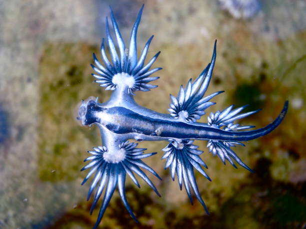

A kék sárkány egy apró tengeri csiga, amely átlagosan körülbelül 3 centiméter hosszú. Különleges kék és szürke színe miatt nagyon látványos állat.
A nyílt tengeren él, és más tengeri élőlényekre vadászik, például a portugál gályára. Különlegessége, hogy a zsákmánya mérgét el tudja raktározni, majd saját védekezésre is felhasználja.
A kék sárkány átlagosan 3 centiméteres, színei a szürkéből, valamint a kék szín árnyalataiból tevődnek össze. A puhatestű állat nála jóval nagyobb tengeri organizmusokra vadászik, például a veszélyesen mérgező portugál gályára.A portugál gályából annak mérgére való immunitásának köszönhetően táplálkozhat. A csiga elfogyasztja az egész gályát, szétválasztja és elraktározza a mérgét saját használatra. A méreg egy különleges tömlőben gyűlik a tok végén, a vékony tollszerű „ujjain”. A csiga összegyűjti a mérget és még erőteljesebb és halálosabb méreggé változtatja, mint amilyennel az elfogyasztott gálya rendelkezett.A Glaucus atlanticus más, nagyobb nyílt tengeri organizmusokra vadászik; a veszélyesen mérgező portugál gályára, a Vellelára, a Porpita porpitára és a lila csigára, a Janthina janthinára. Időnként saját fajtársuk is áldozatukká válik.
Vissza a főoldalra